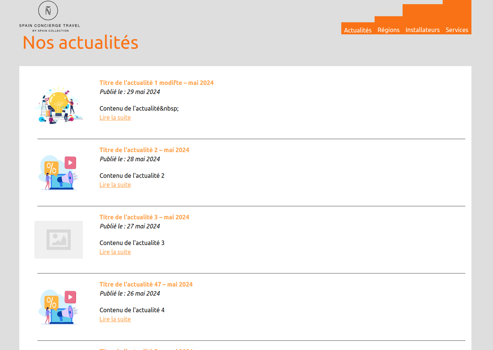
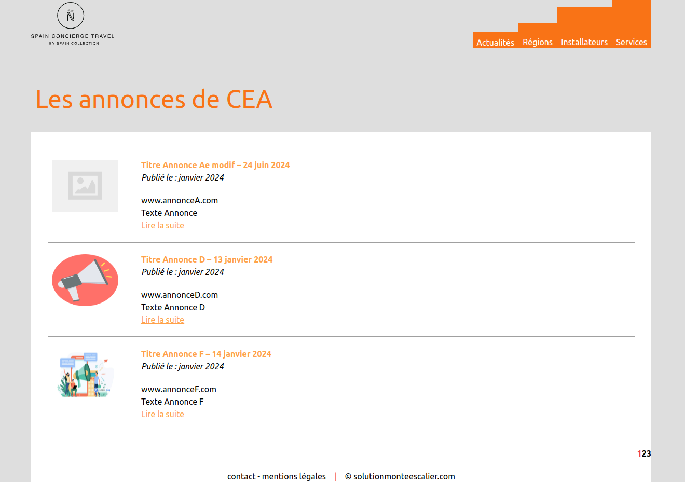
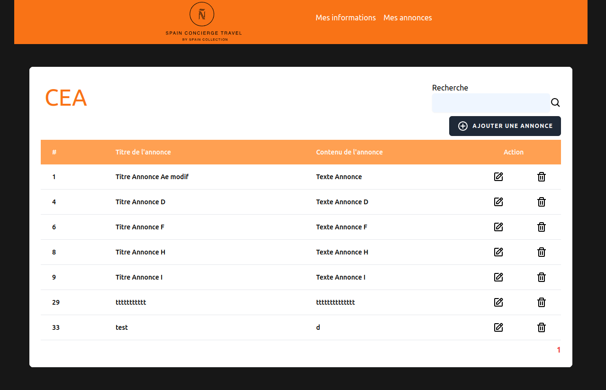
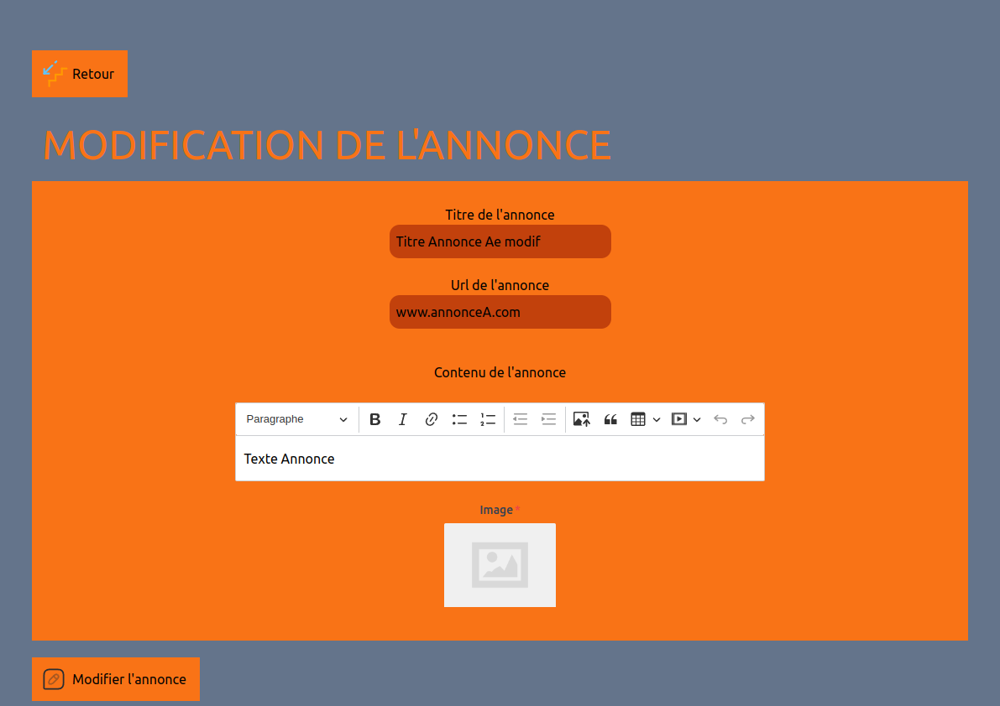
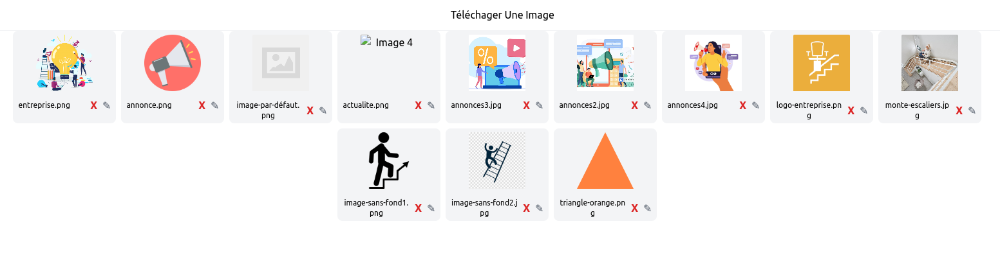
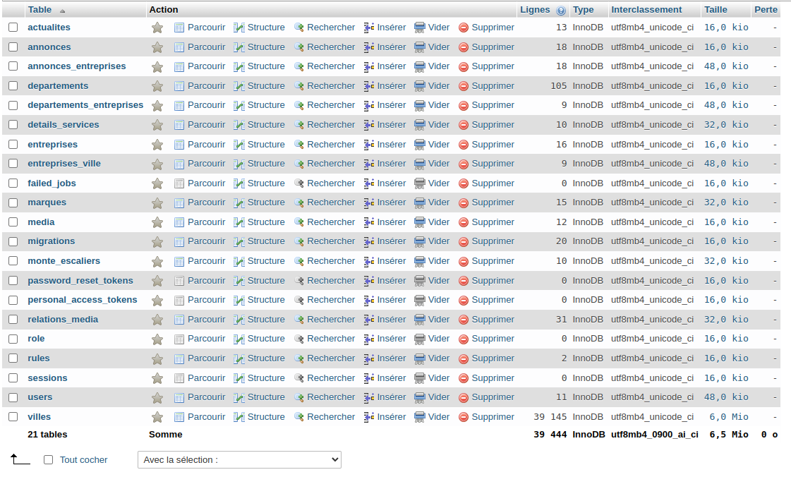
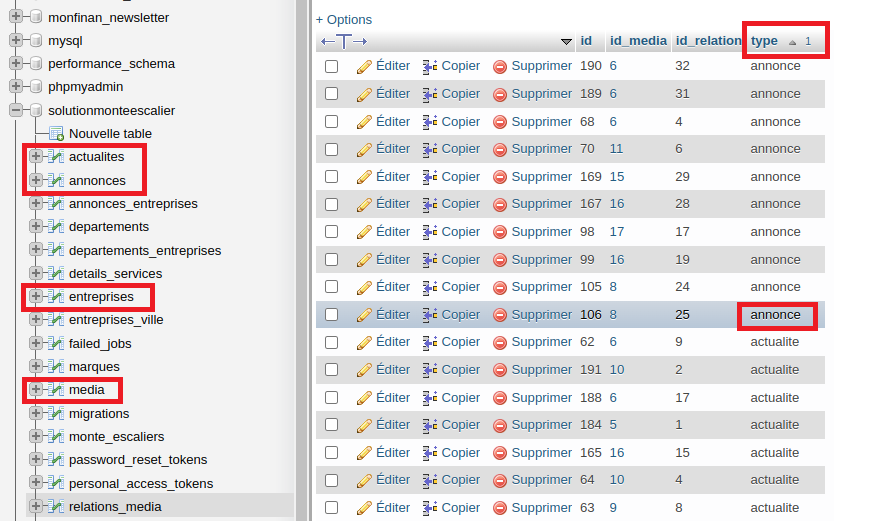

J'ai effectué mon premier stage au sein de l'entreprise Digiplace Web Solutions, spécialisée dans les solutions web à destination des professionnels. Créée en 1995 par David Juni et située à Saint-Mandé, en région parisienne, l'entreprise compte sept collaborateurs : le gérant, un responsable du développement, un responsable du tutorat, une responsable de la cellule graphiste, ainsi que trois développeurs juniors, dont mon tuteur de stage, Jialei Sun.
Digiplace propose des services tels que la réservation de noms de domaine, l'hébergement de sites web et de messageries électroniques, ainsi que la gestion de newsletters. Elle offre également des services de référencement, de maintenance, et développe ses propres applications en plus des sites web pour ses clients.
Durant mon stage, j'ai participé au développement de l'une de ces applications en collaboration avec un autre stagiaire. Vous pouvez découvrir ce projet ci-dessous :
Le site sur lequel j'ai travaillé est un site web en interne, Solution Monte Escalier. L'entreprise avait déjà ce site wordpress en ligne et voulait le coder. Solution Monte Escalier est une plateforme qui permet les entreprises qui permet aux entreprises de monte escaliers de présenter leurs produits. Les clients peuvent obtenir des devis, rechercher la meilleure entreprise en fonction du département desservi.
Ils n'avaient pas encore établi une maquette mais la structure était déjà faite. Il s'agissait de coder toutes les fonctionnalités du site internet. J'ai travaillé sur ce projet en collaboration avec un autre stagiaire grâce à GitLabs. J'étais chargée de l'interface client, et lui du back office. Les dernières semaines j'ai aussi reçu des tâches sur le back office.
Il est à ce jour toujours en format wordpress à ce lien.J'ai tout d'abord travaillé sur la page d'accueil afin de la rendre intéractive et intuitive. Un utilisateur peut rechercher un département, cette requête l'envoie sur une nouvelle page qui référence toutes les entreprises travaillant dans ce secteur. Une entreprise au hasard est mise en avant, avec son nom, sa description et son logo.
La partie actualité présente les actualité liées aux monte escaliers que le site met en avant. Les noms, les dates et les images sont à titre d'exemples. Elles sont paginées, l'utilisateur peut les parcourir sur la page d'accueil, ou aller cliquer sur "voir toutes nos actualités". Ce bouton les renvoie à une page qui recence toutes les actualités du site.
J'ai aussi codé la partie "annonces" du site. Chaque entreprise publie ses propres annonces. J'ai créé une page qui affiche toutes les annonces en fonction de l'entreprise en question. Les annonces sont aussi paginées en fonction du nombre d'annonces
J'ai aussi codé la partie "annonces" du site. Chaque entreprise publie ses propres annonces. J'ai créé une page qui affiche toutes les annonces en fonction de l'entreprise en question. Les annonces sont aussi paginées en fonction du nombre d'annonces
Chaque entreprise peut changer le nom, le contenu, les photos de ses annonces dans le back office. Elle peut aussi en ajouter. Pour se faire, elle se connecter dans un espace dédié. Elle a aussi accès à toutes ses informations
 En cliquant sur la partie "image", elle a accès à toutes les photos déjà utilisées et présentes dans la base de données. Elle peut aussi en ajouter, ce qui ajoute cette nouvelle image à la base de données.
Ce projet a été codé en Laravel et en React JS. J'ai travaillé sur la partie Front End et Back End. Cela a été un challenge technique car je ne connaissais aucun des deux langages. J'ai appris à créer et utiliser des API, des controllers et des modèles.
Pour créer et gérer les nombreuses données du site, j'ai utilisé une base de données SQL. La modélisation de la base de données a été réalisée de manière à stocker les informations pertinentes pour chaque actualité, entreprise, leurs annonces, leur région etc. Les relations étaient nombreuses pour associer toutes les tables.
J'ai créé deux tables. La première "medias" contient toutes les images utilisées sur le site, ce qui permet d'éviter la redondance de la colonne "medias" dans les tables "actualites", "annonces" et "entreprises". La deuxième table "relations_media" permet de relier ces trois tables à la table "medias".
id_media est la clef étrangère liée à la table "medias" et représente le numéro du média. La relation avec les trois autres tables se fait par le champ "type". Dans une requête, on écrira une égalité avec l'élément dont on cherche à afficher le média, par exemple "actualite" qui renverra à la table "actualites". Le champ "id_relation" correspond au numéro de l'élement associé, par exemple l'actualité numéro 25.
Gérer le patrimoine informatique
Répondre aux incidents et aux demandes d'assistance et d'évolution
Développer la présence en ligne de l'organisation
Travailler en mode projet
Mettre à disposition des utilisateurs un service informatique
Organiser son développement professionnel